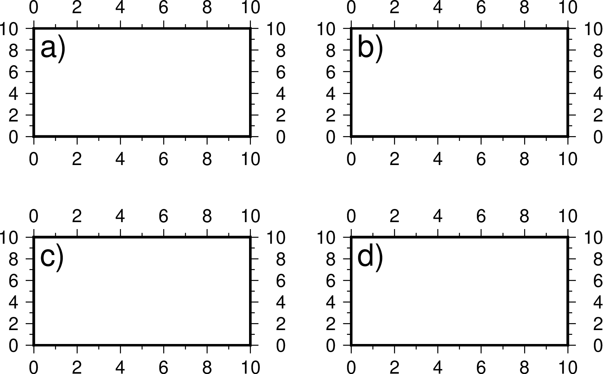

3.11 GMT子图模式¶
有些时候需要把多张图放在一张图中，最直接的做法是分别绘制不同的图，然后通过移动各个图的绘图原点，将多张图拼接成一张图。
针对这种需求，GMT的 subplot 模块提供了子图模式。子图模式的基本思想是将整体绘图区域分割成M行N列的网格，每个网格区域内均可以绘制一张子图。子图模式主要适用于子图具有相似的底图的情况。若子图的底图差异太大，或者多个子图的布局不规则，则不建议使用子图模式，而是直接使用 -X 和 -Y 选项人工设定每个子图的绘图原点。
子图模式的特色在于：
- 自动控制每个子图的位置而无需用户自己移动坐标原点；
- 自动为每个子图编号；
- 每张子图可以有各自的子图标题，整张图也可以有自己的标题；
- 多张子图可以共享X轴或Y轴
子图模式的选项比较多，此处仅举一个示例，详细用法见 subplot 的说明文档。本示例中整张图片包含了2行3列共计6个子图，且每列的两张子图共享X轴，每列的子图共享Y轴。
gmt begin subplot-example png,pdf
gmt subplot begin 2x3 -Fs4c/4c -A'(a)' -M5p/10p -BWsrt -SCb -SRl -T"Subplot Example"
gmt basemap -R0/80/0/10 -c
gmt basemap -R0/50/0/10 -c
gmt basemap -R0/20/0/10 -c
gmt basemap -R0/80/0/20 -c
gmt basemap -R0/50/0/20 -c
gmt basemap -R0/20/0/20 -c
gmt subplot end
gmt end
